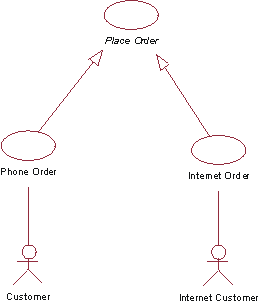
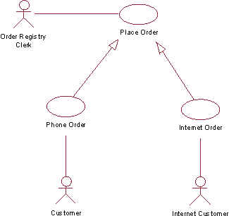
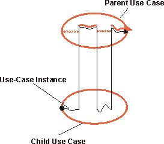
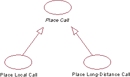

| Guideline: Use-Case Generalization |
 |
|
| Related Elements |
|---|
ExplanationA parent use case may be specialized into one or more child use cases that represent more specific forms of the parent. Neither parent nor child is necessarily abstract, although the parent in most cases is abstract. A child inherits all structure, behavior, and relationships of the parent. Children of the same parent are all specializations of the parent. This is generalization as applicable to use cases (for more information on the concept of generalization as applied to classes, see Guideline: Generalization). Generalization is used when you find two or more use cases that have commonalities in behavior, structure, and purpose. When this happens, you can describe the shared parts in a new, often abstract, use case, that is then specialized by child use cases. Example:
 The use cases Telephone Order and Internet Order are specializations of the abstract use case Place Order. In an Order Management system, the use cases Telephone Order and Internet Order share a lot in structure and behavior. A general use case Place Order is defined where that structure and common behavior is defined. The abstract use case Place Order need not be complete in itself, but it provides a general behavioral framework that the child use cases can then make complete. The parent use case is not always abstract. Example: Consider the Order Management system in the previous example. Say that we want to add an Order Registry Clerk actor, who can enter orders into the system on behalf of a customer. This actor would initiate the general Place Order use case, which now must have a complete flow of events described for it. The child use cases can add behavior to the structure that the parent use case provides, and also modify behavior in the parent.
 The actor Order Registry Clerk can instantiate the general use case Place Order. Place Order can also be specialized by the use cases Telephone Order or Internet Order. The child use case is dependent on the structure (see Guideline: Use Case, the discussion on structure of flow of events) of the parent use case. The child use case may add additional behavior to the parent by inserting segments of behavior into the inherited behavior, or by declaring include- and extend-relationships to the child use case. The child may modify behavior segments inherited from the parent, although it must be done with care so that the intent of the parent is preserved. The structure of the parent use case is preserved by the child. This means that all behavior segments, described as steps or subflows of the parent's flow of events, must still exist, but the contents of these behavior segments may be modified by the child. If the parent is an abstract use case, it may have behavior segments that are incomplete. The child must then complete those behavior segments and make them meaningful to the actor. A parent use case need not have a relationship to an actor if it is an abstract use case. If two child use cases are specializing the same parent (or base), the specializations are independent of one another, meaning they are executed in separate use-case instances. This is unlike the extend- or include-relationships, where several additions implicitly or explicitly modify one use-case instance executing the same base use case. Both use-case-generalization and include can be used to reuse behavior among use cases in the model. The difference is that with use-case-generalization, the execution of the children is dependent on the structure and behavior of the parent (the reused part), while in an include-relationship the execution of the base use case depends only on the result of the function that the inclusion use case (the reused part) performs. Another difference is that in a generalization the children share similarities in purpose and structure, while in the include-relationship the base use cases that are reusing the same inclusion can have completely different purposes, but they need the same function to be performed. Executing the Use-Case GeneralizationA use-case instance executing a child use case will follow the flow of events described for the parent use case, inserting additional behavior and modifying behavior as defined in the flow of events of the child use case.
 The use-case instance follows the parent use case, with behavior inserted or modified as described in the child use case. Describing the Use-Case GeneralizationIn general, you do not describe the generalization-relationship itself. Instead, in the flow of events of the child use case you will specify how new steps are inserted into the inherited behavior, and how inherited behavior is modified. If the child is specializing more than one parent (multiple inheritance), you must in the specification of the child explicitly state how the behavior sequences from the parents are interleaved in the child. Example of UseConsider the following step-by-step outlines to use cases for a simple phone system: Place Local Call
Place Long-Distance Call
The text in blue is very similar in the two use cases. If the two use cases are so similar, we should consider merging them into one, where alternative subflows show the difference between local calls and long-distance calls. If, however, the difference between them is of some significance, and there is a value in clearly showing in the use-case model the relationship between local call and long-distance call, we can extract common behavior into a new, more general use case, called Place Call. In a use-case diagram, the generalization-relationship created will be illustrated as follows:
 The use cases Place Local Call and Place Long-Distance Call are inheriting from the abstract use case Place Call. |
© Copyright IBM Corp. 1987, 2006. All Rights Reserved. |